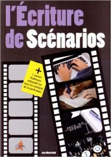
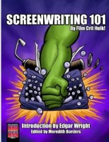

Arveed
Techniques d’écriture, construction d’un récit, ouvrages de référence
Il y a quelque temps, je tombais sur un article qui faisait la comparaison entre écrivains et artistes.
L’idée était de penser que l’écrivain était différent de l’artiste au moins en ce sens que le premier commence par essayer de créer un produit fini sans avoir d’abord travaillé chaque qualité individuelle nécessaire à la création du produit final (l’Histoire).
Un dessinateur va par exemple s’entraîner sur les parties spécifiques, comme les ombres, ou le trait, sans avoir besoin de créer une œuvre à part entière.
Un écrivain s’assoit rarement à son bureau pour s’entraîner au dialogue, ou à la description, ou encore à l’expression des sentiments, sans dans le même temps essayer de créer une histoire.
C’est un petit peu comme si vous demandiez à un artiste de dessiner votre portrait sans qu’il ait d’abord appris à tenir un crayon. Les différentes techniques à maîtriser pour dessiner sont étudiées, essayées, travaillées par tous les étudiants des écoles d’art avant de se lancer dans des projets plus complexes aboutissant à des œuvres finies.
Cette idée, peut-être très anglo-saxonne, est celle que le métier d’écrivain nécessite plusieurs savoir-faire, et que chacun de ces savoir-faire peu se travailler individuellement, au plus grand bénéfice de l’écrivain, qui ajoute de plus en plus d’outils à sa boite au fur et à mesure qu’il « s’entraîne ». Au fond, on ne devrait pas imaginer s’asseoir pour écrire une Histoire sans penser au fait que les dialogues, les problèmes de point de vue, la voix choisie, les descriptions ou la structure du récit sont des domaines qu’il est nécessaire de maîtriser, car ils doivent s’effacer au profit de l’Histoire, justement.
Au-delà des exercices (certains auteurs connus utilisent leur blog pour vous en proposer ; ce n’est pas très difficile à trouver avec un bon moteur de recherche Evitez les bulles, utilisez Duckduckgo. My two cents. ), la structure de nos récits est quelque chose qui m’intéresse particulièrement.
Il m’est impossible, de toute façon, d’attaquer un roman, une nouvelle ou un truc intermédiaire sans avoir un solide outline. Du coup, pour savoir ce qui fonctionne ou pas, ce que les autres font, et comment faire, j’ai, au fil des ans, accumulé quelques bons ouvrages sur le sujet (mais pas que) dont je vous propose la liste.
Il n’y a que du bon, en tout cas que des choses qui me servent de référence. Certains ouvrages sont en anglais (mais des traductions sont disponibles), mais bon, hein, nos amis anglophones étant bien plus décomplexés que nous sur ces techniques d’écriture, il est bien naturel qu’ils en parlent plus.
L’écriture de scénarios
de Jean-Marie Roth.
Lien amazon 
C’est le premier ouvrage qui m’a mis le pied à l’étrier de la construction narrative. À la suite d’une master class suivie au début des années 2000 (l’auteur est un passionné, qui a réveillé à nouveau lors de ces quelques jours l’auteur en moi. Si, si.)
Ecriture
de Steven King.

Pas besoin de description. Celui-ci est régulièrement conseillé, tout simplement parce qu’il est très bon. Et King est un maître (ah ah.)
Zen in the art of writing
de Ray Bradbury.

Entre poésie et inspiration, cette collection d’essais évoque avant tout l’amour de l’auteur pour l’écriture. Cela me redonne un peu de peps sur les coups de mou, ceux que l’on peut avoir de temps à autre.
The writer’s journey
de Christopher Vogler.

Vogler écrit un livre sur la composante de toute histoire qui tient la route, à savoir le voyage du héros, basé sur les travaux de Campbell. Alexandre Astier en parle beaucoup mieux que moi à propos d’une master class organisée par Vogler sur Lyon en 2012, fait rarissime.
Screenwriting 101
de Film Critic Hulk.
Lien amazon 
Fortement axé sur la critique de scénario et du coup, la décomposition de ces derniers, de leur structure, de la profondeur des personnages… Quelques archétypes de personnages et leurs interactions sont bien décrits, ainsi que la construction d’un personnage crédible. Trouvé grâce à Neil Jomunsi (merci, gars !), qui en fait encore une fois un meilleur éloge que moi.
The story grid
de Shawn Coyne.

Une petite merveille basée sur l’expérience de nombreuses années en tant qu’éditeur de Shawn Coyne. Il sort de tout cela une grille d’analyse qui peut servir à comprendre où une histoire peut pêcher (au niveau de la critique), agissant un peu à la manière d’un script-doctor sur votre livre.
Il illustre cette technique, tout au long de l’ouvrage, en analysant Le silence des Agneaux de Thomas Harris. On découvre le pourquoi, le comment l’histoire de Clarice Sterling et sa relation avec le Dr Lecter nous file les chocottes et nous engage autant.
Cette grille peut également être utile à la préparation d’une histoire, et je l’utilise pour mon prochain thriller (titre provisoire : Redteam).
Comment écrire des histoires
de Elisabeth Vonarburg.

C’est ma dernière acquisition, pas encore eu le temps de le lire. De mémoire, c’est un livre conseillé par Alexandre Astier dans la même série de vidéos (celles sur Vogler).
Voilà donc une belle petite liste. Et vous, que pensez-vous des techniques d’écriture ? Avez-vous des ouvrages à conseiller ?
Note : ce sont des liens sponsorisés. Soyez libres de trouver ces livres par vous même, mais un peu d’amour ne fait jamais de mal, si vous souhaitez me soutenir, n’hésitez pas : cliquez !